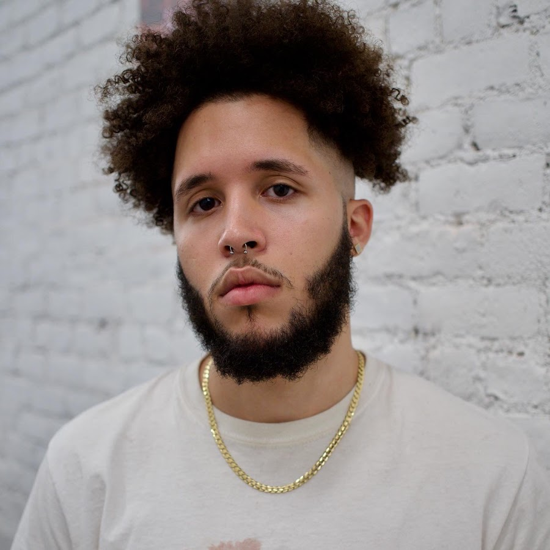
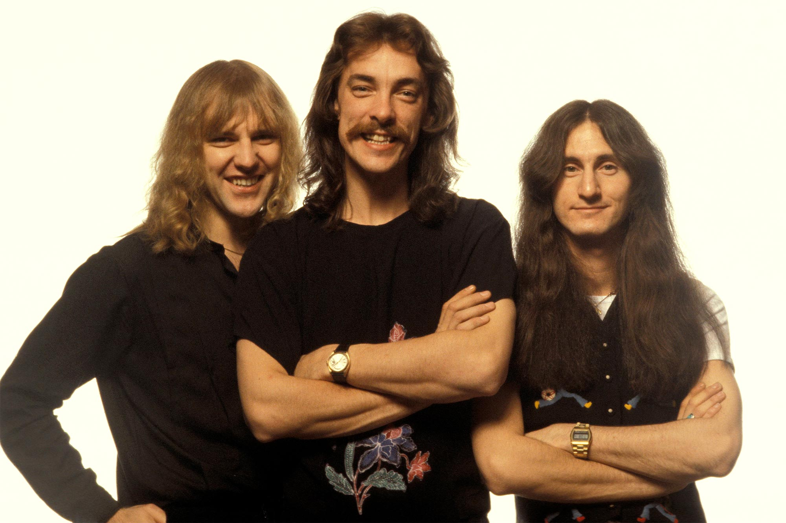
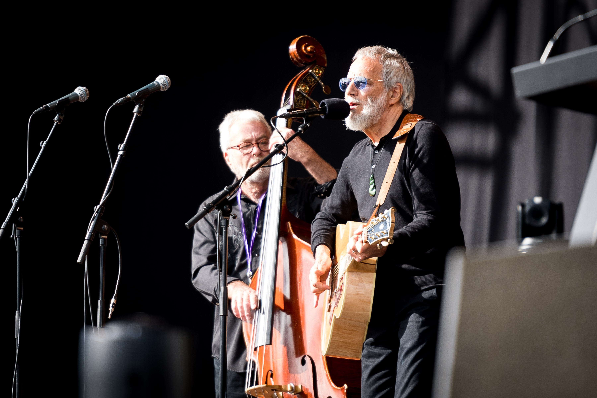

Andre is most definitely the most influential artist of my life. Since I was in elementary school, I listened to Hey Ya. I didn't know anything about the song other than that it was by this mystery called OutKast. Then in middle school I got acquainted to hiphop and I discovered that OutKast was the duo of BigBoi and Andre 3000. I discovered this funky dude who wore wigs and wicked bright colors, but spit some of the hardest rhymes ever. He really pushed the boundary of what it was to be a man and still express yourself. I've wanted to be as comfortable with myself as he is ever since I knew who he was.
Kendrick Lamar is the best live performance artist I've ever seen. When I saw him live, my whole life changed. I looked at him and wanted to do what he does. Every single project he's done has been filled with so much passion, emotion, and raw feeling. He's the pinnacle of expression.

I've already spoken about Roley, but lets not forget he is a real life rapper. He's good too.
Lil Wayne was my first favorite rapper. He's the real deal, he never writes anything down. In middle school I first heard Tha Carter IV, and I was hooked right away. He's a great example of longevity and adaptation. He is also the most famous 'Lil,' and before him rappers didn't really have dreads or face tattoos. He influenced a lot of artists.
Chance The Rapper, my soundcloud hero. He put out all of his albums and mixtapes for free, and he dominated my whole highschool experience. He dropped his mixtape 10 Day in 2012, which was when I first started getting into the internet. Then by 2016, he had dropped Acid Rap, then Coloring Book, and by then I was a fan of his, and he acts in such a morally just manner. Someone I choose to look up to and model myself after.
Elephant in the room, Kanye West is not a good person. I do not codone his actions or his opinions, but his musical genius is undeniable. He has one of, if not the best discographies in music history.
Bob Dylan is a recent favorite of mine. In my opinion, he's a gifted writer. He has some of the most thought provoking lyrics of all time. Whenever I am feeling particularly down, he doesn't have music that'll make me feel better, but he always has something that explains exactly the way I'm feeling.
Another recent favorite, John Denver is the kind of 'country music' that I appreciate. When he was making music, he was very connected to his roots. He not only made good music about nature, but he had multiple projects spearheading conservation efforts, including big efforts in Alaska and Africa. Very accurate model for a good citizen.
J.Cole is an inspiration for anyone who is all about the grind. He released 3 mixtapes; The Come Up, The Warm Up, and Friday Night Lights, before his project Cole World: The Sideline Story blew up. He always remained humble, and he's done everything himself. Not only is he a top five lyricist, he's a top 5 producer. He deserves all his flowers.
Jay Z is my sense of New York pride. I didn't appreciate him much when I was younger, but over these last couple of years, I've learned and appreciated his game. He's one of the best song makers of his generation, doing his songs in one take, and not needing to write stuff down. He's lyrically gifted, and has had a voice in hiphop for almost 3 whole decades.
I would say that classic rock is my favorite genre, even above rap, and Greta Van Fleet ignite something special inside me. Not only do they rock and roll with the best of them, they're my generations band. These guys are like 25, and they look and feel like the biggest rock bands from the 80s. I feel a generational bias towards them that I don't feel for any other group. They tackle current relevant issues with the most impressive guitar riffs
All my life I haven't really felt like I've been an outcast to every group I've been a part of. Just never quite fit in. Queen is also just a group of misfits who bonded together to make something great. Freddie Murcury, the lead vocalist, is an electric performer with a voice like no other. Against the hatred of the media, Queen never stopped being themselves. I would like remain unapologetically myself just like them. They inspire me to be unique and live an exciting life.
Drake has to be one of my main influences, because there was never really a time I can remember where I didn't know a Drake song. He's been putting out music since I've been listening to it, and he doesn't really ever miss. People call him corny or whatever, but statistics show he is a hit maker. There is always a running dialogue about him, speaking to his relevance in the culture.
He was taken at far too young of an age, but Mac Millers impact was profound. He reminds me to keep moving forward. He spoke on how hard his jounrey was, but how he never gave up. He's one of those artists that will be appreciated for a long time, its such a shame that he's not still around making music that touches peoples hearts.

Rush lies in my top 3 rock bands of all time. They were only three members, but there is a reason that nobody does Rush cover bands. The sound they could output with only three guys is untouchable. They not only had intellectual conversations with their music, it got people moving. They had arguably the best drummer ever, Neil Peart, who had a 360 degree kit. The band tragically broke up when Peart lost his daughter and wife in a year. He just went away, and the band was so tight knit that they didn't see the point of touring without their drummer, so they took a hiatus. But no matter what, their music lives on.
Led Zeppelin is known everywhere. They have powerful songs, songs that increase the energy of the room. Only four members, one of the baddest to ever play the guitar, they had the world in their grip when they were hot. Every album of there's has something to take away from it. They're loud, and they'll rock the roof off of anywhere. Truly amazing band.

Yusuf, formally Cat Stevens, has a calming and inquisitive style of music. Alot of his stuff is objectively sad, but in an inspiring kind of way. His music makes me want to foster and grow my relationships in my life. His songs make me appreciate what I have in my life.
Tyler, The Creator has taken hip hop by storm. He shakes things up, he breaks the mold time and time again. He's always been labeled as 'different' but he never let that define him. Each of his albums shows more growth than some artists experience in their whole careers. He represents how you can change as a human but still be yourself. He is a fashion mogul, and a role model you can follow if you're trying to discover who you are.